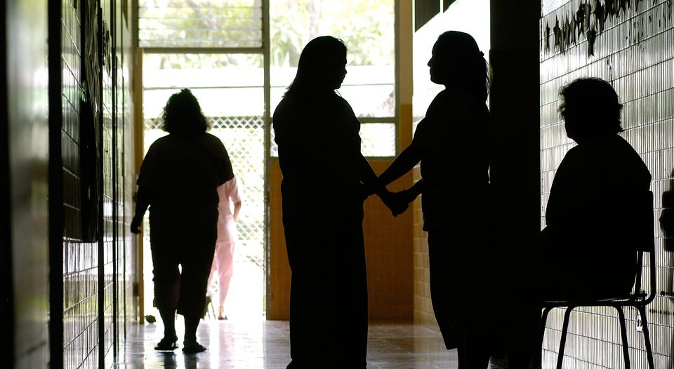

- Los hospitales son nuestras misiones.
- La vida es una enfermedad; el mundo todo un hospital, y la muerte nuestro medico
- Un hospital no es un ligar para enfermos
- La vida es un hospital donde cada enfermo está poseído por el deseo de cambiar de cama.
- Un hospital con alma, vida y amor al servicio
- No hay medicina que cure lo que no cura la felicidad.
- El día que leí que el alcohol era malo para la salud dejé de leer.
- La felicidad del cuerpo se funda en la salud; la del entendimiento, en el saber.
 La mejor salud tiene un límite.
La mejor salud tiene un límite.
Historia
EL PROCESO DE REHABILITACIÓN DEL HOSPITAL DANIEL BRACAMONTE – EMPEZADO EN 1997 GRACIAS A UN PROYECTO DE LA COOPERACIÓN ITALIANA – FUE ESTUDIADO PARA RESPONDER A LAS DIFICULTADES EN EL SECTOR SANITARIO DEL DEPARTAMENTO DE POTOSÍ, EN EL SUR-OESTE DE BOLIVIA, QUE REGISTRA 780.000 HABITANTES Y DIFUSOS PROBLEMAS DE SALUD QUE DERIVAN DEL TRABAJO EN LAS MINAS. EL DOCUMENTO VIDEO ILUSTRA: LA FASE DE CONSTRUCCIÓN DEL HOSPITAL Y LA SUCESIVA INAUGURACIÓN (2001). LOS PROBLEMAS DE SALUD DE LOS MINEROS, AUMENTADOS POR UN CONTEXTO SOCIO-ECONÓMICO EXTREMO. EL ENFOQUE INTEGRADO DE UN PROGRAMA A LA VANGUARDIA QUE, A TRAVÉS DE LA INTERCULTURALIDAD, FAVORECIÓ EL ACCESO A LOS SERVICIOS SANITARIOS BIOMÉDICOS A UNA PARTE DE LA POBLACIÓN HISTÓRICAMENTE EXCLUIDA DE LOS MISMOS. LA LARGA Y LEGENDARIA HISTORIA COLONIAL DE POTOSÍ. LAS PERSPECTIVAS, A LARGO PLAZO, DE COOPERACIÓN CIENTÍFICO-SANITARIA, GRACIAS A LOS ACUERDOS INTER-UNIVERSITARIOS ENTRE INSTITUTOS BOLIVIANOS E ITALIANOS. LA INAUGURACIÓN DE WILLAQKUNA, LA PRIMERA OFICINA DE MEDICINA INTERCULTURAL DE BOLIVIA. LA PELÍCULA, TESTIMONIO HISTÓRICO Y ÚNICO DEL TRABAJO DE LA COOPERACIÓN ITALIANA EN EL SECTOR SOCIO-SANITARIO E INTERCULTURAL, DESCRIBE LA CREACIÓN Y EL DESARROLLO DE UN PIONERO PROGRAMA DE COOPERACIÓN, A LA VANGUARDIA POR METODOLOGÍAS Y ESTRATEGIAS DE INTERVENCIÓN, REALIZADO EN UNA DE LAS MÁS REMOTAS Y DIFÍCILES REGIONES DEL MUNDO.
Ir a la ventana principal